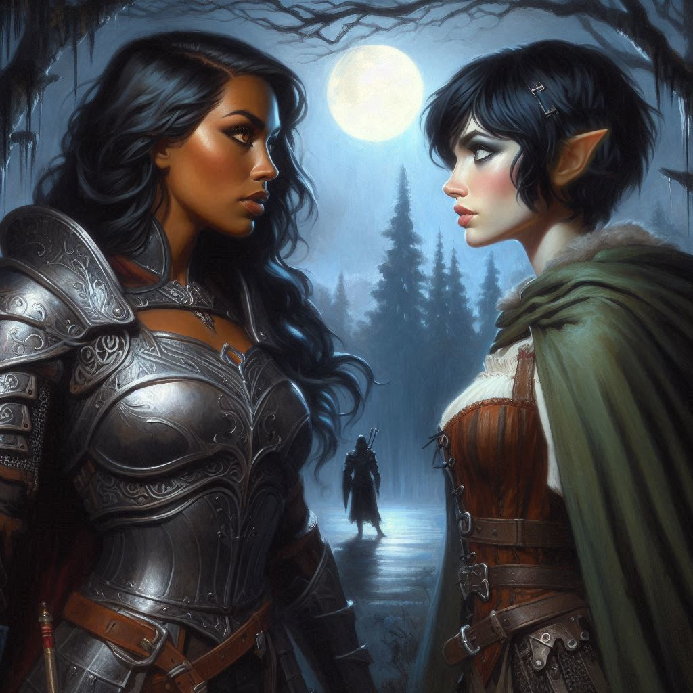
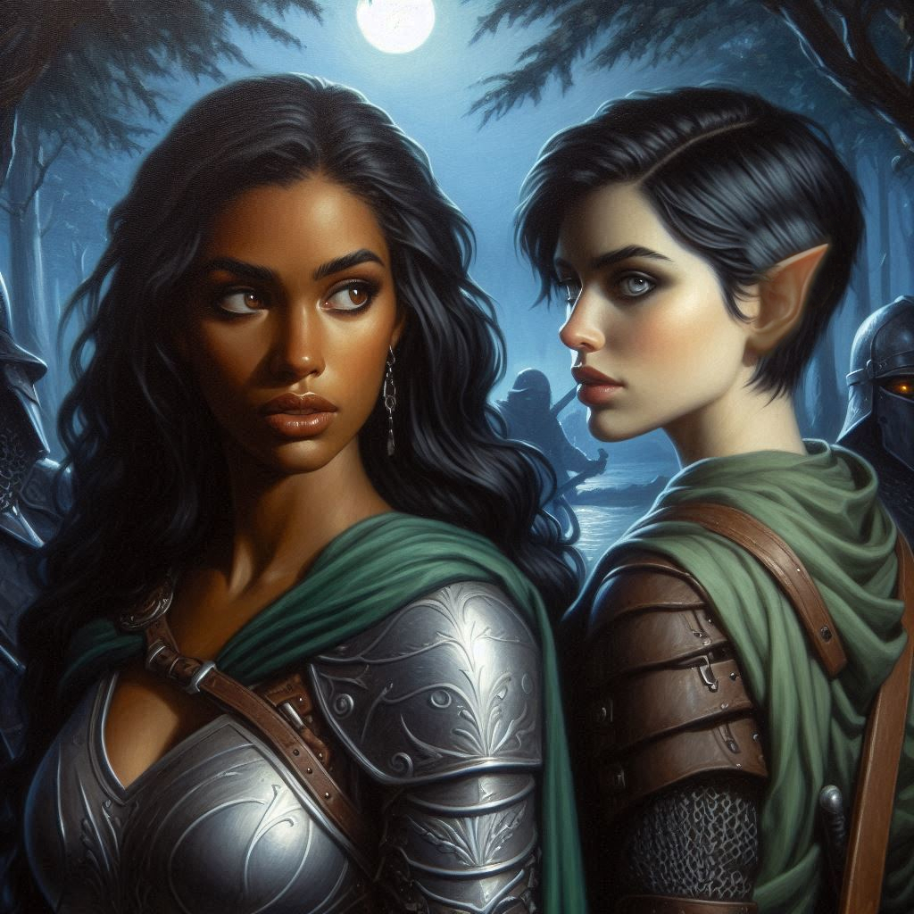
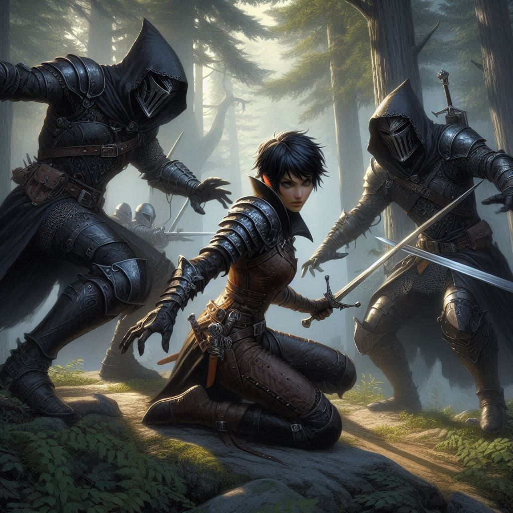

A Royal Pain in the Pass
The forest surrounding Hemlock Falls is thick with mist, the pale light of the moon casting an eerie glow through the trees. Every step forward feels heavier, as if the air itself is thickening with magic. You’ve been walking for hours, the pain from your earlier wounds slowing you down. But you press on. The mission won’t wait.
A rustling sound to your left makes you freeze. Your hand instinctively falls to your dagger. The trees stand still, but your ranger’s instincts tell you someone is nearby—someone skilled enough to stay hidden. Slowly, you move closer, each step calculated and silent.
Then you see her.
A woman steps out from the shadows, draped in a long, hooded cloak of deep blue velvet. Her features are sharp, striking—platinum blonde hair spilling out from beneath the hood, and pale skin that seems to glow in the dim light. But it’s her eyes that hold you captive: piercing, royal blue, with a coldness behind them that sets you on edge.
“Don’t bother hiding,” she says, her voice smooth, with an edge of command. “I know you’re there.”
You step into view, dagger still in hand. There’s no mistaking who this woman is—Princess Hawthorn of the Kingdom of Yew. You’ve seen her likeness in portraits before, but nothing prepared you for the real thing. She carries herself like someone who’s used to getting what she wants.
Your eyes lock for a tense moment, neither of you backing down.
“Princess Hawthorn,” you say, keeping your voice even. “What are you doing this far from the kingdom?”
She smirks, crossing her arms. “I could ask you the same thing, ranger. But let’s not pretend we’re here by chance. I’m searching for something… valuable.”
Her words hang in the air like a test, but you don’t take the bait. Instead, you stay silent, waiting for her to make the next move.
The Princess’s eyes narrow, and she steps closer, her gaze never leaving yours. “You’re after Jorsh, aren’t you? The sorcerer.”
The mention of his name sends a chill through you. How does she know? You grip your dagger tighter, unsure whether you should trust her.
“And what’s your interest in him?” you ask, your voice guarded.
She smiles, but it doesn’t reach her eyes. “I’ve heard rumors. Dark magic, hidden treasures… things a ranger wouldn’t understand.”
You grit your teeth. “Try me.”
The Princess raises an eyebrow, clearly intrigued by your defiance. She lets out a soft laugh, and for a moment, her cold facade seems to crack. “I think we might be after the same thing, though for different reasons.”
Your instincts tell you not to trust her, but you can’t deny that there’s power in an alliance. If she’s looking for the same treasure Jorsh is after, her knowledge might be useful. But something about her doesn’t sit right—the way she holds back, the way her gaze lingers on you, calculating, as if she’s already two steps ahead.
“So, what’s your plan?” you ask, testing her. “Why follow me?”
Her lips curve into a smile, and she takes another step closer, her fingers brushing lightly against your arm. “I thought perhaps we could help each other, Kira. You take me to the Falls, and I might just lead you to your sorcerer.”
The way she says your name sends a flicker of warmth through you, but you force it aside. You’ve been down this road before—trust is a dangerous thing.
“What’s in it for you?” you ask, narrowing your eyes. “What aren’t you telling me?”
Princess Hawthorn tilts her head, her smile fading. “You think I’m hiding something?”
You hold her gaze, refusing to back down. “I know you are.”
The Princess’s eyes flash with something like admiration. “You’re smarter than I gave you credit for.” She sighs, her tone shifting. “If you must know, I’m after a treasure that could… solve certain problems for me back in the kingdom. My motives are my own, but our paths align, for now. Help me, and I’ll help you.”
You’re not sure if you believe her, but one thing is clear: she’s desperate. Desperation can make people dangerous—or it can make them useful.
Before you can decide, another rustle from the trees breaks the moment. Both of you snap to attention. You scan the shadows, your ranger instincts telling you something is wrong. You see movement—figures darting between the trees, silent and fast.
“Ministry mercenaries again?” you mutter, drawing your dagger.
Princess Hawthorn unsheathes a slim blade, her movements quick and graceful. “Looks like someone’s been watching us.”
The figures emerge—four men, armed and masked, clearly not here by accident. You recognize the crest on their armor—the Minister of Trade’s men, no doubt sent to eliminate anyone in their way. Your earlier encounter was just the beginning.
“They won’t stop,” you say, bracing for the fight.
Hawthorn nods, her eyes glinting with determination. “Then let’s not give them the chance.”
The fight is swift, brutal, and unforgiving. You work together in silence—Hawthorn’s movements are precise, her blade flashing in the moonlight as she takes down one attacker after another. Your own ranger skills guide you through the chaos, dodging strikes and countering with deadly precision.
One by one, the men fall.
As the final thug collapses, silence returns to the forest. You stand side by side, breathing hard but victorious. For a moment, you exchange a glance, the adrenaline still surging through your veins.
“You fight well,” Princess Hawthorn says, wiping her blade clean. “Better than most.”
“Thanks,” you reply, watching her carefully. “You’re not so bad yourself.”
There’s a pause, thick with unspoken tension. The way she looks at you makes your pulse quicken, but you push it aside. Focus.
“Looks like we’re stuck with each other,” Hawthorn says, her voice softening. “At least for now.”
You nod, though your mind races with questions. Can you trust her? And why do you feel drawn to her, despite the danger she represents?
As you sheathe your dagger, you can’t help but feel that your mission just became more complicated than you ever imagined.